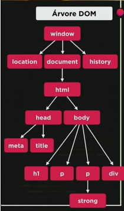
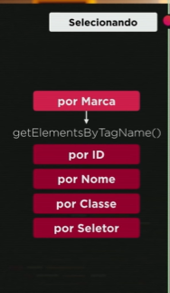

Introdução a DOM - Document Object Model
DOM é um modelo de objetos para documentos
Basicamente é um conjunto de objetos dentro do navegador que vai dar acesso aos componentes internos do site.
Árvore DOM do site
Elementos da Árvore DOM
Basicamente começa da Raiz e a raiz a gente chama de window. Tudo que está no javaScript está em window. Dentro de window temos vários outro objetos:
- Qual é a localização do site, URL, qual a página atual e a anterior
- Usamos muito, será o documento atual
- Em documento teremos o objeto HTML (child de location e parent de head e body) com dois objetos
- head (child de HTML)
- No nosso documento head teremos várias tags: meta, title
- body (child de HTML)
- No nosso documento body teremos várias tags: h1, h2, p, div...
- Guarda de onde viemos para onde vamos no site
Podemos selecionar esses elementos para navegar na minha árvore DOM
O getElementsByTagName() é um método que seleciona mais de um objeto se não especificarmos.
O conteúdo abaixo está sendo inserido por uma seleção do objeto 'p' pelo comando
var p1 = window.document.getElementsByTagName('p')[0]
window.document.write(p1.innerText)Tradução:A variável p1 recebe como um documento de txt na tela o que estiver na tag ('p')[0] (Primeiro parágrafo do documento).
Na tela receberemos um documento informando (o que p1 recebeu acima de valor)
Primeiro parágrafo novamente reproduzido abaixo com o script
Podemos também utilizar os:
- querySelector() ou querySelectorAll()
- É o mais recomendável de se utilizar, faz a seleção através de elementos css.
- getElementById()
- getElementsByName()[]
- getElementsByClassName()[]
Para transmitir o que está abaixo foi feito dessa forma:
a 'principal' é o nome do id da div que foi mostrada em tela
var d = window.document.getElementById('principal')
window.document.write(d.innerHTML)